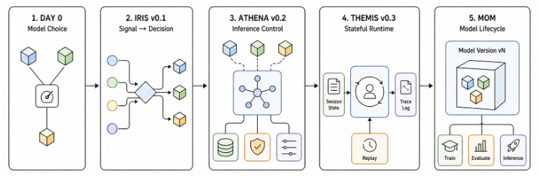

Six milestones in about 14 months from April 2025 to June 2026. This product rapidly evolved from a fixed model choice to full lifecycle management of a Mixture-of-Models system. See the vLLM Blog post, “Beyond a Single Model: Building Mixture-of-Models Systems with vLLM Semantic Router” (2026).

| Milestone | When | What changed |
|---|---|---|
| Incubation | Apr 2025 | Early semantic-routing prototypes began with Mixture-of-Models as the long-term system goal |
| Initial release | Sep 2025 | Intent-aware selection between fast and reasoning paths |
| v0.1 Iris | Jan 2026 | Signals, decisions, and route-scoped plugins replaced fixed classification |
| v0.2 Athena | Mar 2026 | Model selection, memory, RAG, long context, and multimodality expanded routing into an inference control system |
| v0.3 Themis | Jun 2026 | Stateful routing, projections, replay, protocol support, session continuity, and one production configuration contract made the system operable |
| Fusion and Micro-Agent | Jun 2026 | The router began choosing collaboration patterns, not only individual models |
As of mid-2026 the project documents 11 current selection algorithms, from simple nearest-neighbor voting to live metrics-blending — illustrating how much the decision-algorithm menu from earlier in this talk has grown in practice. A few earlier proposals (marked below) didn’t make it into the shipped algorithm set, but are kept here since they still map cleanly onto that taxonomy.
| Family | Method | Where it fits in the taxonomy | What it does |
|---|---|---|---|
| ML-based | KNN | Clustering · offline | Finds similar historical queries and lets nearby examples vote for the best model. |
| ML-based | KMeans | Clustering · new models cheap | Clusters requests and assigns models based on cluster-level quality and efficiency patterns. |
| ML-based | SVM | Difficulty classifier · offline | Learns nonlinear decision boundaries between model preferences using an RBF classifier. |
| ML-based | MLP | Difficulty classifier · offline | Uses a neural router to predict the best model from embeddings, with efficient inference through Candle. |
| Advanced | Static | No routing — fixed choice | Uses a fixed default model or declared order when predictability matters more than adaptation. |
| Advanced | Latency-Aware | Metrics — latency in objective | Selects the fastest candidate from TPOT and TTFT percentile data when latency budgets dominate. |
| Advanced | Multi Factor | Metrics · multi-signal | Balances quality, latency, cost, and load at once, with optional SLO filters. |
| Advanced | Elo * | User preference · online | Learns from user feedback and pairwise preferences using Bradley-Terry style rating updates. |
| Advanced | RouterDC | Clustering / similarity · offline | Matches queries to model descriptions with dual-contrastive embedding similarity. |
| Advanced | AutoMix | Uncertainty · cascade escalation | Starts with cheaper models and escalates based on self-verification to balance cost and quality. |
| Advanced | Prompt | Difficulty / capability · LLM-judged | Lets a bounded helper model choose directly from the declared candidate models. |
| Advanced | Hybrid | Combined blocks · metrics-weighted | Blends multiple selector scores such as quality, similarity, and cost with configurable weights. |
| Advanced | Thompson Sampling * | RL (bandit) · online | Balances exploration and exploitation online so routing can keep learning while serving production traffic. |
| Advanced | GMTRouter * | User preference · multi-turn state | Personalizes model choice from multi-turn interaction history with graph-based routing. |
| Advanced | Router-R1 * | RL · multi-round state | Uses an external router model to reason about the request before choosing a downstream model. |
* No longer documented as a current vLLM Semantic Router algorithm — kept here to illustrate the taxonomy.
Beyond single-model selection, the project also ships five “Looper” algorithms that orchestrate multiple models per request instead of picking just one:
| Method | Where it fits in the taxonomy | What it does |
|---|---|---|
| Confidence | Workflow = cascade with escalation policy | Escalates sequentially through models until confidence clears a threshold. |
| Ratings | Workflow = parallel + aggregate | Gets one response from each candidate with bounded concurrency, similar to consensus voting. |
| ReMoM | RL / multi-round · reasoning synthesis | Explores several reasoning paths across multiple rounds, then synthesizes a final answer. |
| Fusion | Workflow = parallel + aggregate, panel + judge | Runs an analysis panel across models, then a judge/synthesis pass merges the results. |
| Workflows | Workflow = planner + multi-step | Executes a bounded static or planner-generated multi-worker flow. |